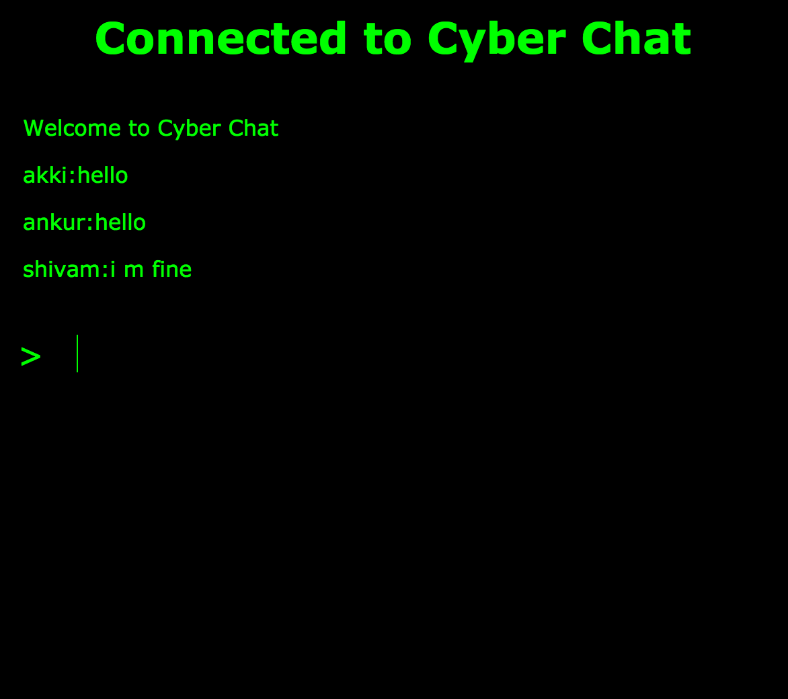

<div id="project">
	<section class="content">
		<div class="block-content">			
			<div class="project-title">
				<h2>Chat Application</h2>
				<p class="tags">Node.js / Android / iOS</p>
			</div>
			<p class="project-description">Sockets have traditionally been the solution around which most realtime chat systems are architected, providing a bi-directional communication channel between a client and a server. For server, I have hosted node.js socket code in heroku. For client side, I have integrated in Android as well as in iOS. So, the user can chat through Desktop as well as from mobile.
 </p>

<p><a href="http://firsttestnode.herokuapp.com/">Chat App</a></p>
<p><a href="https://github.com/AkkiShashank/Socket.io-Android">Github Link for Android</a></p>
<p><a href="https://github.com/AkkiShashank/Socket.io-iOS">Github Link for iOS</a></p>
			<div class="project-media">
				  
			</div>        
		</div>
	</section>
 </div>

